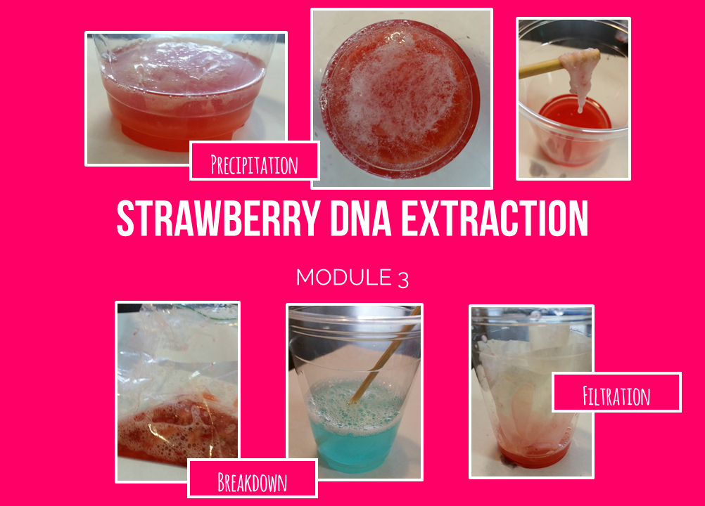

In addition to teaching a class of elementary school students hands-on science and engineering lessons once a week, I have contributed to two side-projects within the organization.
First, I pioneered the organization’s first genetics lesson, which guided 300 students to ultimately perform a strawberry DNA extraction.
Second, I redesigned the “About” page of the organization's website using HTML, CSS, and JavaScript to improve UI/UX and to ease maintenance.
In the past, many of BEAM's lessons have been physics/mechanical engineering based because it is often most engaging for students to construct and experiment with contraptions such as catapults, marble rollercoasters, foil boats, and the like.
But I believed that bioengineering should have its place in the curriculum as well!
In the traditional school curriculum, advanced biology topics are typically not introduced until late middle school or high school.
However in my eyes, I saw no reason why some of these topics, such as those that encompass genetics, could not be simplified to their core ideas so that our young students could gain an early intuition for them.

The lesson I developed seeks to bridge the gap between what our students already know to the seemingly abstract concept of genetics.
It begins by having students observe their phenotypic expressions and realizing that there must be some statistical mechanism at play to cause the evident effects of dominance and uneven trait expression.
For advanced students, these statistical probabilities of expression are explored using Punnett Squares.
In the end, students conclude that a substance called DNA is responsible for keeping a record of what traits are to be expressed by an organism.
They are given the analogy that DNA strands are like snippets of string and are asked to make observations about this model they are given (white, intertwined strands, long, skinny, etc.).
Finally, each student performs a DNA extraction from a strawberry, allowing them to practice some basic chemistry laboratory techniques (filtration, etc.) and to physically touch and play with real DNA strands.
With regards to the lesson in action, the students I worked with thoroughly enjoyed it; they were very surprised when they actually saw that real DNA was indeed very similar to the strands of string we showed them and many asked us to give them a copy of the procedure so that they could perform the extraction again at home.
Originally, the website source code had the name, major and image source of each staff member hard coded, each taking up a few lines of code.
I realized that this was code was very redundant and difficult to maintain, especially when the staff roster was to be updated in subsequent semesters.
My solution was to instead have all data listed in one place in an easy to populate array and to use a block of javascript in order to dynamically style each element provided by the array.
I am grateful to BEAM for being the first to introduce me to teaching and to help me realize both the impact I am making on our kids and the growth that I am experiencing professionally.
I look forward to many more semesters with BEAM in which I hope to develop even more unique lessons and hone my teaching and communication skills.
I thank Melody Wei and Vicky Zhang for encouraging me and guiding me through my first teaching moments.
I also thank Bernardo Gouveia, Caroline Wilcox, Varun Chhabra, Ian Ferguson, and Bonnie Su for providing feedback on the Genetics lesson.
Finally, I thank Kevin Arifin for leading the website redesign project.